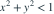
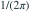
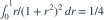

密度为 ，仅在

非零。C为？- A
- B
- C
- D

我已思考，展开答案与解析
正确答案：A
- 极坐标半径只积分0到1。

，总积分为 。- 归一化得到C=2/π。
易错提醒径向上限从无穷改成1后，常数也需要重新计算。
考后回忆 · 条件重建 · 回忆16的有限支撑变式
依据考试回忆重建；数字、选项和必要条件为补充设定，非原题。

非零。C为？

，总积分为 。考后回忆 · 条件重建 · 回忆16的有限支撑变式
依据考试回忆重建；数字、选项和必要条件为补充设定，非原题。